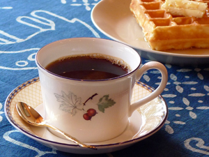
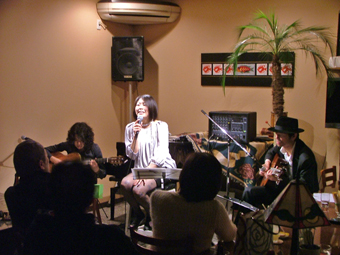
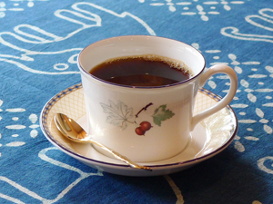
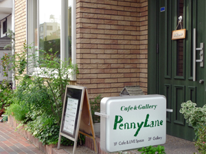
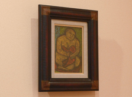
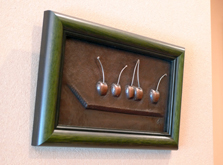
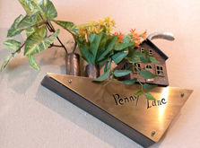
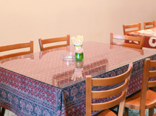
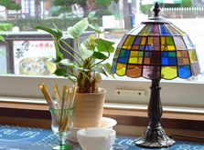
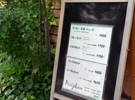

SHOP INFORMATIONCafe & Gallery Penny Lane
音楽とアートが楽しめる家庭的なカフェ

倉敷中央通りに面している「Cafe & Gallery Penny Lane」は、ピアノや歌の指導をしていたオーナーが、「生演奏のできるカフェを始めたい」ということで、2003年の春にオープンしたカフェ。
店内には、絵画や彫金作家の作品などが飾られ、シンプルだけどどこかセンスを感じさせる、ホッと一息つける空間です。
2階のスペースはギャラリーとして使うこともあります。
生演奏を体全体で感じられる空間

音楽が楽しめるカフェ、というコンセプトの「Cafe & Gallery Penny Lane」では、地元のアマチュアや県外のプロのミュージシャンを呼んで、月に2、3回ライブが行われています。
「一つのジャンルにこだわらずに、色々な音楽を聴いてもらいたい」という思いから、演奏される音楽は多種多様。
オーナーが弾くピアノにあわせて、5～10人でポップスを歌う、という会なども定期的に開催しているそうです。
おすすめのフードとスイーツ
人気フードメニューは、しめじ、エリンギ、しいたけ、マッシュルームがたっぷり入った和風パスタ。セットでサラダとドリンクが付きます。
デザートメニューは、サクサクの食感で中はふわふわのブリュッセルワッフルが人気です。生地の甘さが控えめなので、メープルシロップで甘さを調整して、紅茶やコーヒーと一緒に。
自慢のコーヒーと紅茶

オーナーがおすすめするメニューが、コーヒーと紅茶。
コーヒーは、一番美味しいと感じた豆を使用し、1杯ずつドリップしてくれるので、淹れたての美味しさを味わえます。
コーヒーカップは、オーナーがカフェを始める前から集めていたという、ウェッジウッドやミントンなどのブランドもの。好みのカップを自分で選ぶお客さんもいるそうです。
紅茶はティーサーバーで提供され、茶葉を丁寧に抽出しています。一番人気はアールグレイ。他に、ダージリンやアッサム、ハーブティーなど6種類の紅茶が用意されています。
気軽に立ち寄れる、アットホームなカフェ

「Cafe & Gallery Penny Lane」は、倉敷駅から中央通りを南へ歩いて約8分のところに位置します。
商店街や美観地区、「東横イン」などが近くにあるので観光にとても便利。
天気の良い日は、日差しが差し込む心地よい窓側の席で、美味しいコーヒーや紅茶とともに、ゆっくりとした時間を過ごしてみてはいかがですか。
倉敷へ訪れた際には、ぜひ一度足を運んでみてください。
- 
- 
- 
- 
- 
- 
Googleマップでみる
一覧に戻る